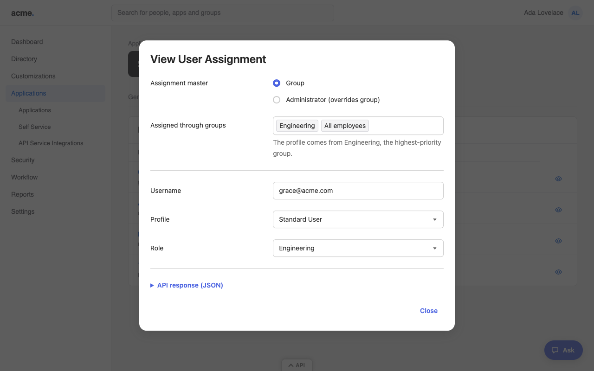

Built for read-only admins
Read-only shouldn't mean in the dark
Plenty of teams manage Okta as code. Every change goes through Terraform and a reviewed pull request, so nobody gets an edit role in the console, not even the engineers who write the config. But Okta's Read-Only Administrator role hides much of that configuration, because many settings only show up in the Edit dialog.
Okta Max puts a 👁 wherever Okta leaves out Edit. It opens the exact form you'd get as a super admin, with every field locked, using the API access you already have. Check what's live without breaking GitOps.
- App assignments, with the groups behind them by priority
- SAML settings
- Group rules and network zones
- Authentication, global session and password policy rules
- Authenticator settings, even where Okta hides the Actions menu
- The raw API response, for the fields no form shows
- Auditors, help desk and security reviewers find answers on their own
- Still read-only: your role doesn't change, and Okta itself rejects any change you try
